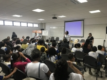
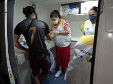
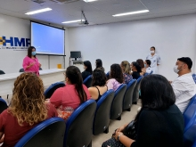

TRABALHO
Prefeitura do Recife oferece 1.170 vagas em cursos de qualificação
profissional em parceria com o Estado

SAÚDE
Projeto Além do Olhar, da Prefeitura do Recife, realiza atualização
dos profissionais de saúde para identificar alterações na visão dos
estudantes da rede municipal

SAÚDE
Hospital Eduardo Campos da Pessoa Idosa promove testagem de
infecções sexualmente transmissíveis nesta sexta-feira (7)

SAÚDE
Hospital da Mulher do Recife retoma programa Programa de Doulas
Voluntárias